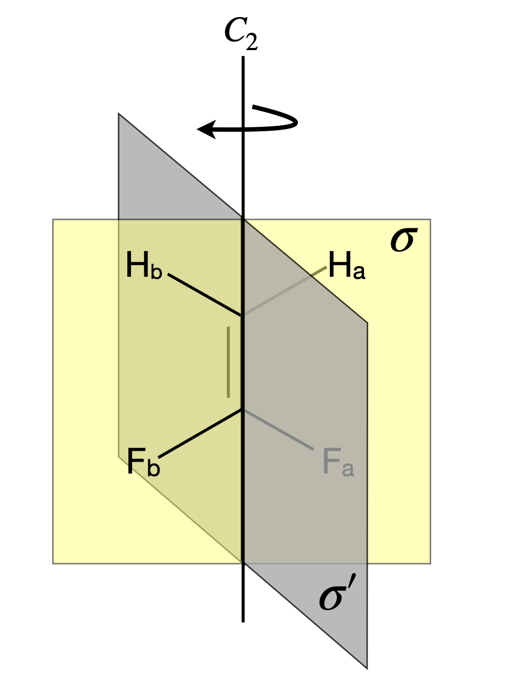
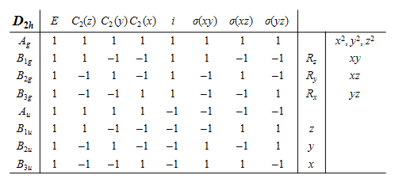
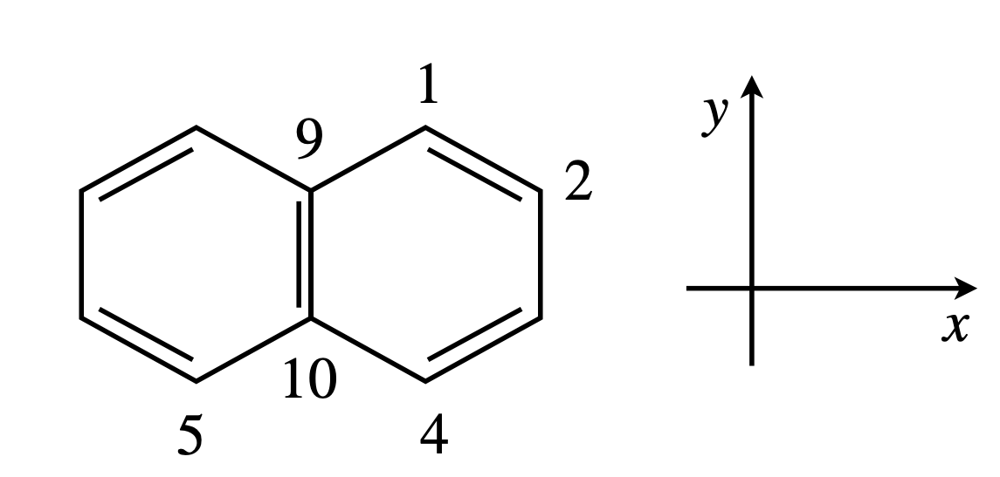
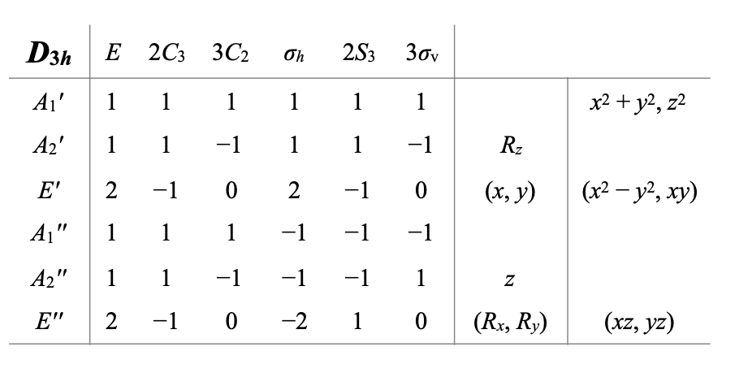

Questions 17 - 30¶
Q17 Ammonia Point group¶
Ammonia belongs to the \(C_{3V}\) point group and has the following symmetry elements: the identity, a \(C_3\) axes, and three vertical mirror planes. The rotation about the principal axes is \(120^\text{o}\) rotation clockwise \(C_3^+\), and either a rotation by \(-120^\text{o}\) (anticlockwise) labelled \(C_3^-\) or a rotation by +\(240^\text{o}\). The three mirror planes are at \(120^\text{o}\) to one another and are labelled \(\sigma_V, \sigma_V'\) and \(\sigma+σ_V''\). Work out the \(6 \times 6\) group multiplication table.
Strategy: The number of calculations can be reduced from \(36 \to 19\) because the product of a symmetry operation with the identity \(E\) leaves the operation unchanged. However, multiplication of an operation with itself does not necessarily produces the identity, which means that only the first row and column can be written down directly. Completing the table is rather like doing a Sudoku problem, each product must be a member of the group and each row and column contains all the elements in the group. This means that as the table approaches completion the missing terms can be inferred from those already in a row or column.
Q18 Ammonia point group (again)¶
(a) Repeat the same calculation as Q17 but using the NH bonds as a basis set to form \(3 \times 3\) matrices. Multiply these as appropriate to produce the group multiplication table.
(b) Write a Sympy algorithm to do this.
Q19 Group multiplication¶
Find the group multiplication table using the symmetry operations from the group \(E, B, C\) where \(E\) is the identity but \(B\) and \(C\) are arbitrary.
Strategy: Use the rule for group multiplication that a product is also a member of the group. Also each row and column must contain each member of the group.
Q20 Similarity transform¶
Using the similarity transforms, \(A_1 = \sigma_V^{-1}C_3^-\sigma_V\) and \(A_2 = \sigma_V^{-1}C_3^+\sigma_V\) show that the \(\sigma\) operations belong to the same class in \(C_{3V}\) as \(C_3^+\) and \(C_3^-\). Use the matrices from the previous question and Sympy to perform the matrix multiplication if necessary.
Q21 XeF\(_4\)¶
The molecule XeF\(_4\) is square planar and because of its high symmetry, it has many symmetry elements. Assign its point group and also sketch and list all the symmetry elements. To confirm positively the point group you will need a set of tables. These can be found in most physical chemistry textbooks and in any book on molecular group theory.
Strategy: Not all the symmetry elements need be to found to assign a point group. Sketching the molecule immediately suggests fourfold symmetry. Do not forget to look for S symmetry elements and a centre of inversion. Use the point group ‘road map’ to identify the point group if necessary; see Fig.17.
Q22 Reflection matrix¶
Work out the \(3 \times 3\) matrix for the reflections \(\sigma\) and \(\sigma'\) in \(C_{2V}\) as defined in Fig.11 with the basis set \((Cl, O_a, O_b)\).
Strategy: Define a symbolic matrix equation to describe what a reflection does then find a matrix that performs the same operation.
Q23 Rotation-reflection¶
(a) Work out the effect of a rotation followed by a reflection \(\sigma'\) in the \(C_{2V}\) point group. Then reverse the order so that a reflection is followed by a rotation. Use the matrices calculated in the previous question.
(b) Show that operators \(C_2\) and \(\sigma'\) commute.
Q24 H2C=CF\(_2\)¶
Using the molecule H2C=CF\(_2\), which has \(C_{2V}\) symmetry, generate matrices for each operation, \(C_2, \sigma\) and \(\sigma'\). Use the basis set \((H_a, H_b, C, C, F_a, F_b)\). Swap the order of atoms in the \(C_2\) basis set in any way you choose and show that although the matrix formed is different, the matrix multiplication has the same result on the molecule. The fluorine and hydrogen atoms are in the \(\sigma\) plane. (Use Sympy to perform the matrix multiplications.)

Figure 27 F\(_2\)CCH\(_2\) which belongs to the \(C_{2V}\) point group as do H\(_2\)O, SO\(_2\), NO\(_2\) and COCl\(_2\).
Q25 Pyramidal molecules¶
A pyramidal molecule, such as ammonia NH\(_3\), belongs to the \(C_{3V}\) point group, which has operations \(E, 2C_3\), and \(3\sigma_V\). Using an atom basis set of \((N, H_1, H_2, H_3)\),
(a) Calculate the effect of a \(C_3\) symmetry operation. Identify the rotations and vertical mirror planes. (The \(C_3\) operation is rotation by \(\pm 360/3 = \pm120^\text{o}\)).
(b) Work out the matrix for reflection.
Strategy: Start by drawing a diagram of the molecule and then identify the rotation and reflection axes. Next, rotate the atoms about the principal axis. This is the axis of highest symmetry and is out of the plane of the page if you draw the molecule ‘flat’ on the page. The basis set \((N, H_1, H_2, H_3)\) means form a vector and matrix in only these atoms as has been done in previous questions.
Q26 Rotaton matrix¶
(a) Calculate the matrix for a rotation \(C_n\) about the principal axis then reflection in a perpendicular plane and so produce the matrix for the \(S_n\) operation.
(b) Calculate the trace of the matrix.
Q27 \(\mathrm{C_3H_3^+}\)¶
The molecular ion \(\mathrm{C_3H_3^+}\) has an equilateral triangular shape.
(a)Sketch the symmetry elements in the point group which is \(D_{3h}\).
(b) The point group can be reduced to \(C_3\) when only p orbitals are considered because they remove the horizontal plane of symmetry. Transform the p orbitals under operations from \(C_3\) and from the reduced representation produced find the irreps and therefore the symmetry species of the \(\pi\) molecular orbitals.
(c) The molecular orbitals (wavefunctions) will contain complex numbers but making a linear combination will make them real. Show that this is true.
The \(C_3\) point group character table is
where the labels are \(\epsilon = e^{2\pi i/3}\) and \(\epsilon^*\) is the complex conjugate. The \(E\) species is doubly degenerate and two rows are listed. A fuller account of calculating the MO’s in this molecule can be found in Ratner & Schatz (2001, §13).
Q28 Naphthalene¶
Naphthalene has 10 p\(\pi\) orbitals.
(a) What is the point group if the phase of the orbitals is taken into account in determining the symmetry? Take the short axis of the molecule to be \(x\) the long axis \(y\).
(b) Find the reduced and then irreducible representations (irreps) of these orbitals.
Q29 Naphthalene (again)¶
Naphthalene really belongs to the \(D_{2h}\) point group. Work out the shapes (symmetry species) of its \(\pi\) molecular orbitals. The point group is

The atom numbering is that conventionally taken and starts by labeling around the outside of this planar molecule. The axes should be imagined as being centred on the molecule.

Figure 28 Naphthalene.
Strategy: Find the reduced representation first, then place vectors to represent the p orbitals rising out of the plane of the rings. Choosing a victim orbital, work out how this is transformed under each of the symmetry operations in turn, and build up the orbitals comprising a molecular orbital. You will have to choose three different orbitals as victims, because more than one of each type of some symmetry species is present. For example, orbitals on atom \(1, 2\), and \(9\) do not interconvert so can be chosen as victims. The method is explained in Sections 6.13 and 6.16.
Q30 BF\(_3\)¶
The molecule BF\(_3\) belongs to the point group \(D_{3h}\). Work out the symmetry of the displacements describing its in plane stretching vibrational normal modes. The point group is

(One normal mode is doubly degenerate so use Sympy’s GramSchmidt function to make the vectors orthogonal.)
Strategy: Place vectors along the bonds to find the geometry of the in-plane stretching modes. First, find the irreps that these vectors produce then use the projection operator method to find the modes. There are \(3N - 6 = 6\) vibrational normal modes.